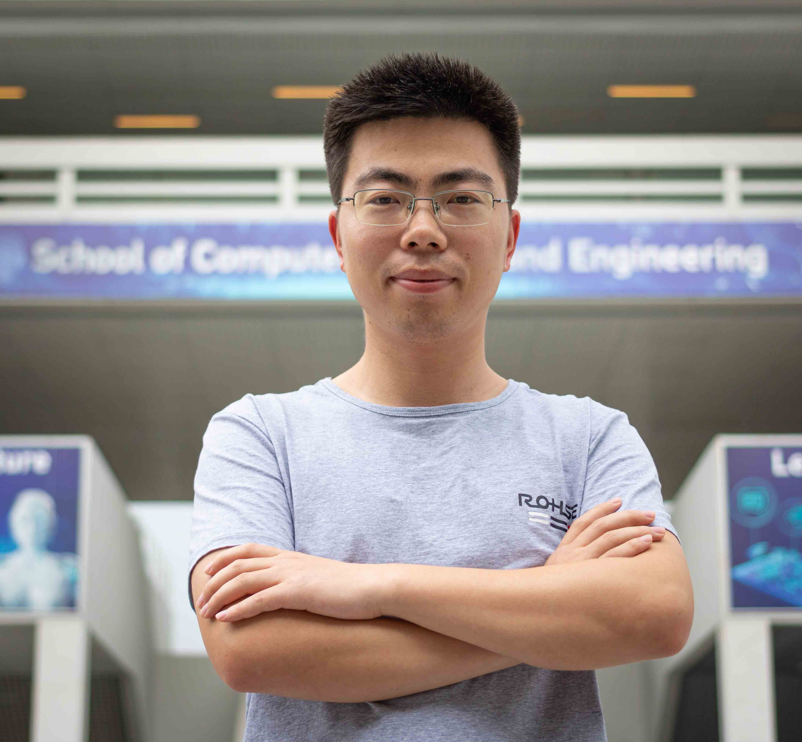

Chuangao Tang (唐传高)
|
 |
Ph.D., MSc, B.Eng
Tenure track Associate Professor
School of Computer Engineering
Nanjing Institute of Technology,
China
Email: tcg2016@aa.seu.edu.cn/njit_tcg@njit.edu.cn
[ResearchGate] [Google Scholar]
[GitHub]
|
Biography
I am currently a Tenure track Associate Professor at School of Computer Engineering, Nanjing Institute of Technology, China.
My research interests include Affective Computing, Autism, Deep Learning.
News
Publications
Journal Papers
Projects
Acadamic service
Teaching